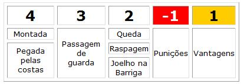

Graduação
| FAIXA |
IDADE MÍNIMA |
| Branca |
4 anos |
| Cinza |
4 anos |
| Amarela |
7 anos |
| Laranja |
10 anos |
| Verde |
13 anos |
| Azul |
16 anos |
| Roxa |
16 anos |
| Marron |
18 anos |
| Preta |
19 anos |
| Coral |
50 anos |
| Vermelha |
67 anos |
Regras
Koma anunciava as primeiras regras do nosso Jiu-Jitsu, um regulamento com dez leis simples:
Pontuação

Tabela de pontuação.